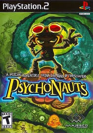

Sinopse
Psychonauts é um jogo de ação-aventura desenvolvido pela Double Fine Productions. O jogador assume o papel de Razputin "Raz" Aquato, um jovem que foge de um circo para se inscrever em um campo de treinamento de elite para psíquicos, os "Psychonauts". O jogo segue Raz enquanto ele explora as mentes de várias pessoas, enfrentando seus próprios medos e lidando com um mistério envolvendo uma ameaça à organização Psychonauts.
Com um estilo único de arte, humor irreverente e mecânicas de jogabilidade criativas, Psychonauts se tornou um clássico cult. O jogo mistura elementos de plataforma com puzzles e combates, e apresenta uma variedade de personagens e cenários excêntricos que fazem parte do universo psicodélico do jogo.
Características Principais
- Exploração de ambientes psicodélicos dentro das mentes das pessoas
- Plataforma e mecânicas de combate criativas
- Humor único e personagens excêntricos
- Jogabilidade diversificada com resolução de enigmas e desafios de plataforma
- História envolvente com mistérios e temas de autodescoberta
- Estilo artístico marcante e visual único
Imagens Adicionais